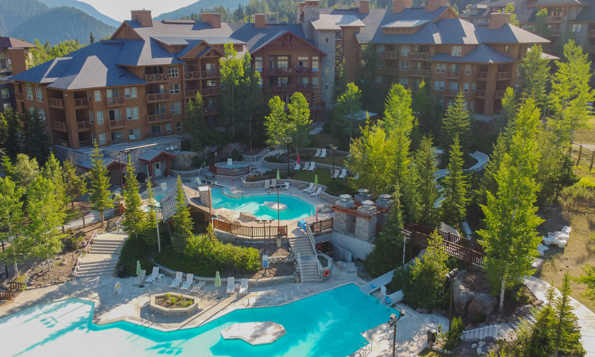

Serenity Springs Lodge
Serenity Springs Lodge offers an unparalleled luxury retreat in a tranquil natural setting, providing elegantly designed accommodations that seamlessly merge with the environment. Whether gazing at azure waters or enjoying top-tier spa treatments, the resort invites guests to unwind in opulent luxury, offering a serene escape from everyday life's chaos.
Serenity Springs Lodge goes beyond luxurious accommodations, offering a diverse range of adventurous activities, from guided hikes and water sports to relaxing by the infinity pool. The resort harmoniously combines luxury, nature, and adventure, ensuring an unforgettable retreat and leaving guests with enduring memories of unparalleled serenity, fostering a longing to return.

Serenity Springs Lodge is not just a place; it's an invitation to reconnect with yourself and your loved ones. Unplug from the digital world and immerse yourself in a haven of mindfulness and relaxation. Our wellness programs and holistic treatments are designed to nurture your well-being, both physically and spiritually. Whether you seek the solace of a morning meditation by the tranquil springs or the expertise of our wellness experts guiding you towards inner balance, your journey to self-discovery begins here. At Serenity Springs Lodge, we believe that luxury is not only about opulent surroundings, but also about the inner peace and rejuvenation that you'll carry with you long after your departure.
What truly sets Serenity Springs Lodge apart is our unwavering commitment to environmental sustainability. Nestled in a pristine natural setting, we take our responsibility to protect and preserve the environment seriously. We operate on eco-friendly principles, striving to minimize our ecological footprint while providing you with every conceivable luxury. Our guests can rest assured that their stay supports the preservation of the beautiful landscapes that make Serenity Springs Lodge so extraordinary. By choosing to visit our resort, you not only indulge in unparalleled luxury but also contribute to the conservation of the very natural wonders that make your experience here so extraordinary. Serenity Springs Lodge is not just a destination; it's a sanctuary where luxury, well-being, and eco-consciousness harmoniously converge.